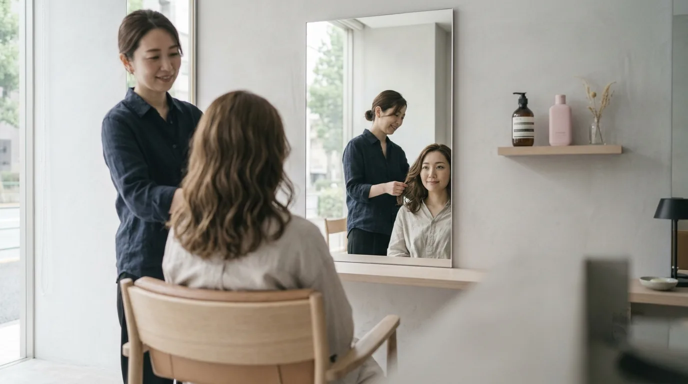

ご来店の流れ
VISIT FLOW
ご来店から仕上がりまでを、四つの区切りでご紹介します。はじめての方は、カウンセリングに10〜15分ほど多くいただきます。急かすことはしませんので、席に着いてから考えていただいて構いません。
四つの区切り
FOUR STEPSご来店・受付／カウンセリング／シャンプー・施術／仕上げ。この四つの区切りで進みます。区切りごとに、いま何をしていて、次に何をするかをお伝えしてから移ります。
FIG. 07a — FOUR STEPS図は進み方を示すもので、実際の店内の配置ではありません
- 01
ご来店・受付
お名前をうかがい、荷物をお預かりします。お飲みものをお出しして、席へご案内します。
約5分 - 02
カウンセリング
鏡の前で四つの質問にお答えいただきながら、いまの髪となりたい姿を並べて見ます。
約10〜15分 - 03
シャンプー・施術
シャンプー台は二台。姿勢や力加減は、途中でもお声かけいただければすぐ変えます。
メニューによる - 04
仕上げ
手鏡でうしろから見た形をご確認いただき、家での乾かし方をお伝えします。
約10分
| メニュー | 所要の目安 | 補足 |
|---|---|---|
| カット | 約60分 | シャンプー・ブロー込み |
| カラー | 約90分 | 根もとのみの場合は約70分 |
| トリートメント | 約30分 | 単品の場合。他メニューと合わせると約20分 |
| デジタルパーマ | 約150分 | カット別 |
| ブライダルヘア&メイク | 約90分 | 試着・リハーサルは別日 |
| ヘッドスパ | 約40分 | 他メニューと合わせると約30分 |
ご来店・受付
01 WELCOME名乗っていただければ、
それで受付は終わりです。
お名前をうかがって、荷物をお預かりします。お飲みものをお出ししてから席へご案内します。ここまでで約5分です。書いていただく用紙はありますが、書きづらいところは飛ばしていただいて構いません。
- 予約枠
- 30分きざみ一つの枠に一名ずつご案内しています。
- 遅れるとき
- ご連絡ください15分を超えるときは、内容を変更させていただくことがあります。
- お子さま
- ベビーカーのまま入れますご同伴のときは、事前にお知らせいただけると席を調整します。
カウンセリング
02 COUNSELING四つだけ、
うかがいます。
鏡の前に座っていただいてから、四つの質問にお答えいただきます。順番は毎回同じです。ここで出てきた言葉を、そのまま今日の設計に使います。
とくに二つめと三つめが要になります。朝にかけられる時間と、次に来られるまでの間隔。この二つの答えで、ご提案するスタイルの「手のかかり方」が決まります。毎朝10分使える方と、3分しか取れない方では、同じ髪でもお出しする形が変わります。
| 番号 | 質問 | この答えで決まること |
|---|---|---|
| Q1 | 今日いちばん気になっているところは、どこですか | その日にいちばん時間をかける場所 |
| Q2 | 朝、髪にかけられる時間はどのくらいですか | スタイルの手のかかり方 |
| Q3 | 次に来られるのは、だいたいどのくらい先ですか | 長さの残し方と、明るさの置き方 |
| Q4 | 避けたいこと（短くしすぎたくない、明るくしすぎたくない 等）はありますか | 今日やらないことの線引き |
四つの質問のあと、髪の状態を見せていただきます。太さ・かたさ・うねり・量の四つの軸と、薬剤の履歴の四段階。ここで、その日にお受けできる施術の幅が決まります。ご希望と状態が離れているときは、二回に分けるご提案をすることもあります。
決めきれないところは、決めないまま席に着いていただいて構いません。シャンプーのあいだに考えていただいても、鏡の前で切りながら決めていただいても大丈夫です。
シャンプー・施術
03 SHAMPOO我慢していただく場所は、
ひとつもありません。
湯の温度、力加減、首の位置。つらいところがあれば、途中でもお声かけください。すぐ変えます。言いにくいときのために、こちらからも一度うかがいます。
施術中は、いま何をしていて、あとどのくらいかかるかを区切りごとにお伝えします。薬剤を使うメニューでは、置いている時間に髪を見に戻ります。予定より時間がかかりそうなときは、その時点でお知らせします。
状態によっては、その日の内容を変えていただくことがあります。全体に薬剤が重なっている髪に、同じ日にカラーとパーマを重ねる施術はお受けしていません。日をあらためるか、カットとトリートメントだけにさせていただきます。
仕上げ
04 FINISHうしろから見た形を、
ご一緒に確かめます。
正面の鏡だけでは、後頭部の丸みや襟足の収まりは見えません。手鏡を添えて、うしろから見た形をご確認いただきます。気になるところがあれば、この時点で直します。
そのあと、家での乾かし方をお見せします。根もとから乾かして毛先は最後、八割で冷風。今日の形を家で出すための順番です。お使いの道具に合わせてお伝えするので、買い足していただく必要はありません。
最後に、次のご来店の目安をお伝えします。四週から十二週のあいだで、今日のスタイルと髪の伸び方から決めます。お支払いは現金・各種カード・QR決済をご用意しています。

決めておくこと
BEFORE & AFTER全部決めてから来ていただく必要はありません。先に決まっていると早いことと、席に着いてから決めても大丈夫なことを分けておきます。
ご来店前に決めておくと早いことだいたいの長さ（肩より上か、下か）
席に着いてから決めても大丈夫なこと前髪をどうするか
ご来店前に決めておくと早いこと次にご来店できるのが、どのくらい先か
席に着いてから決めても大丈夫なこと明るさをどこに置くか
ご来店前に決めておくと早いこと避けたいこと（短くしすぎたくない 等）
席に着いてから決めても大丈夫なこと分け目の位置
ご来店前に決めておくと早いこといちばん気になっていること 一行
席に着いてから決めても大丈夫なことトリートメントを足すかどうか